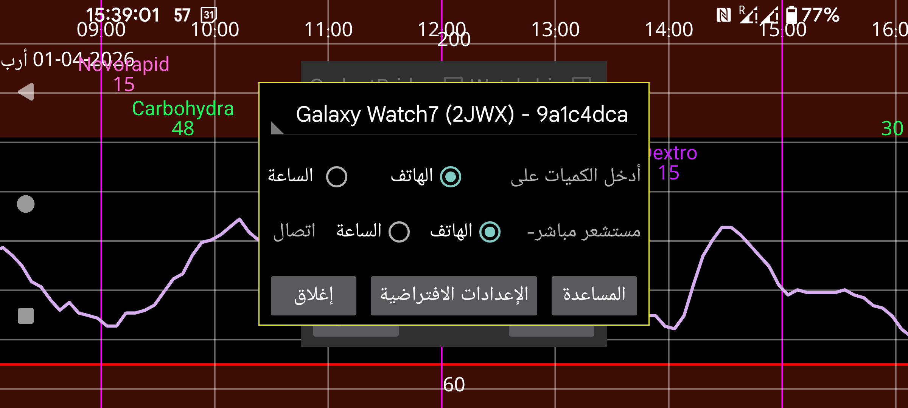

إدخال الكميات على الساعة: أدخل كميات الإنسولين والكربوهيدرات والنشاط على الساعة (القائمة الثانية→ الكمية) بدلًا من الهاتف. وإذا كنت تريد مسح Novopens بواسطة الهاتف، فلا تفعّل هذا الخيار. وإذا نسيت هاتفك، فيمكنك تنفيذ الأمر نفسه على ساعتك من خلال القائمة اليسرى→المستشعر→Switch.
اتصال مباشر بين المستشعر والساعة: يحدد هذا الخيار ما إذا كانت الساعة ستتصل مباشرة بالمستشعر. ولا يمكن تغييره إلا عندما تكون الساعة والهاتف متزامنين. استخدم Mirror->مزامنة وReinit على الهاتف والساعة لمزامنتهما. وإذا نسيت تشغيل “اتصال مباشر بين المستشعر والساعة” قبل أن تخرج من المنزل مرتديًا ساعتك فقط، فيمكنك الضغط على القائمة اليسرى→المستشعر→Switch على الساعة لإنشاء الاتصال المباشر. وعندما يعود الهاتف والساعة إلى مدى البلوتوث، تُرسل رسالة إلى الهاتف ليوقف الاتصال بالمستشعر ويعكس اتجاه اتصال Mirror.
Init watch app: لم تعد بحاجة إلى الضغط على هذا الزر. فهو يحدث الآن تلقائيًا.
Defaults: يعيد هذا الإعدادات الخاصة بالاتصال إلى قيمها الافتراضية. وهذا يتعلق بالإعدادات التي يمكن تغييرها في القائمة اليسرى->Mirror على الساعة، وفي القائمة الوسطى اليسرى->Mirror على الهاتف. ويشمل ذلك إعدادات مثل "نشط فقط" و"القراءات". ويمكن الضغط على هذا الزر إذا تغيّرت الإعدادات عرضًا بسبب ماء الدش أو أثناء النوم. وإذا قمت بإعادة الضبط بإعادة تثبيت نسخة الساعة أو بمسح بياناتها، فعليك أيضًا إزالة اتصال Mirror من الهاتف.
يمكن تشغيل نسخة خاصة من Juggluco مباشرة على ساعة Wear OS. وهي تحتاج إلى هاتف Android مزود بـ NFC لمسح المستشعر، ثم تُرسل هذه البيانات إلى ساعة Wear OS عبر اتصال TCP. وبعد ذلك يوجد احتمالان:
يبقى المستشعر متصلًا بالهاتف الذكي، ويرسل الهاتف كل قيمة غلوكوز يستقبلها عبر البلوتوث إلى ساعة Wear OS عبر TCP؛
ويمكن أيضًا توصيل المستشعر مباشرة بساعة Wear OS. ولأجل ذلك تحتاج إلى ساعة Wear OS تتمتع باتصال بلوتوث جيد.
توجد بعض الصور على https://www.juggluco.nl/JugglucoWearOS
ولتشغيل ذلك اتبع الخطوات التالية:
تأكد من أن البلوتوث والواي فاي يعملان على الساعة والهاتف معًا؛
تأكد من أن الساعة فيها مساحة تخزين وذاكرة RAM كافيتان. فمن الممكن أن تضطر إلى إعادة تثبيت Juggluco إذا نفدت مساحة التخزين في لحظة حرجة؛
اجعل نسخة الهاتف من Juggluco تعمل مع المستشعر. يجب أن تمسح المستشعر عدة مرات مع تفعيل "المستشعر عبر البلوتوث"؛
ثبّت نسخة Wear OS من Juggluco على ساعتك ثم شغّلها؛
على الهاتف، اذهب إلى القائمة اليسرى->الساعة->Wear OS Config. يجب أن تظهر ساعتك في القائمة المنسدلة. اضغط على "Init watch app"؛
إذا سار كل شيء جيدًا، فسيُضبط اتصال TCP في نسختي Juggluco، وستُرسل جميع البيانات الموجودة على الهاتف إلى الساعة. وقد يستغرق ذلك وقتًا طويلًا إذا كنت تستخدم Juggluco منذ مدة طويلة، لأن كمية كبيرة من البيانات ستُنقل. ويمكنك التحقق من ضبط اتصال TCP بالنظر في حوار Mirror (الهاتف: القائمة الوسطى اليسرى->Mirror، الساعة: القائمة اليسرى->Mirror). يجب أن يظهر اتصال يحمل المعرّف نفسه الذي يظهر في القائمة المنسدلة الخاصة بساعتك. وعلى الساعة يجب أن يحتوي أيضًا على عنوان IP للهاتف. وإذا لم يظهر الاتصال، أو لم يظهر عنوان IP في جهة الساعة، فاضغط مرة أخرى على "Init watch app". وإذا ظل غير موجود، فتحقق من اتصال البلوتوث ومن تطبيق الهاتف المسؤول عن الاتصال بساعتك. (وعندما تكون الساعة قد استقبلت بيانات بالفعل، فإن الضغط على "Init watch app" يعيد إرسال جميع البيانات، لذلك يمكنك أيضًا إعادة تثبيت نسخة الساعة من Juggluco. وفي وقت لاحق، إذا لم يظهر عنوان IP الصحيح، فينبغي إيقاف الاتصال الخارجي في الهاتف، سواء الواي فاي أو بيانات الهاتف، ثم تشغيله مرة أخرى.)
إذا سار كل شيء جيدًا، فستُعرض على نسخة الساعة من Juggluco البيانات نفسها المعروضة على نسخة الهاتف. وكل قيمة غلوكوز جديدة يستقبلها الهاتف تُرسل عبر TCP إلى الساعة. كما تُنقل أيضًا بعض الإعدادات مثل الوحدة ومستويات تنبيه الغلوكوز والتذكيرات. أما التغييرات اللاحقة فينبغي إجراؤها على الساعة نفسها.
إذا كانت لديك ساعة ذكية ذات اتصال بلوتوث جيد، وكنت تريد استقبال قيم الغلوكوز على الساعة من دون حمل الهاتف، فيمكنك توصيل نسخة الساعة من Juggluco بالمستشعر مباشرة. وبعد إرسال جميع القيم إلى الساعة يمكنك تحديد "اتصال مباشر بين المستشعر والساعة". عندها يُطفأ خيار "استخدام البلوتوث" في الهاتف ويُفعّل في الساعة. وتُرسل قيم البث الآن من الساعة إلى الهاتف، كما يمكنك التحقق من ذلك في حوار Mirror. ولا يمكنك تغيير "اتصال مباشر بين المستشعر والساعة" إذا لم تكن الساعة والهاتف متزامنين.
إذا كان للمستشعر اتصال بلوتوث مباشر مع الساعة وتُرسل قيمه إلى هاتف ذكي، فيجب أيضًا إرسال القراءات من الهاتف إلى الساعة، ويجب مزامنة قيم البث قبل مسح المستشعر بواسطة Juggluco (تُضبط الإعدادات تلقائيًا بهذه الطريقة). وإلا فقد تُرسل قيم قديمة مرة أخرى إلى الساعة، أو لا تُرسل معلومات المصادقة المعدّلة إلى الساعة، مما يؤدي إلى أخطاء Unlock key.
كما يجب ألا تُجرى تغييرات على الاتصال إلا عندما تكون البيانات متزامنة؛ إذ ينبغي أن تكون البيانات الموجودة على الهاتف والساعة نسختين كاملتين من بعضهما (باستثناء أنك تستطيع استثناء جميع بيانات الكميات).
في المرة الأولى، عندما يلزم نقل كمية كبيرة من البيانات من الهاتف الذكي إلى الساعة، يمكنك وضع الساعة على الشاحن: ساعتي تشغّل الواي فاي عندما تكون موصولة بالشاحن.
اتصال الساعة بالهاتف هو تكييف لاتصال Mirror الذي يمكنك إعداده بين هواتف تشغّل Juggluco وأجهزة كمبيوتر تشغّل Juggluco server. وعندما يُنشأ الاتصال بين الهاتف والساعة تلقائيًا بالطريقة المذكورة أعلاه، فإنه يتضمن الإضافات التالية:
يُحدَّد عنوان IP للطرف الآخر من الاتصال تلقائيًا. وفي الحالة العادية لا تحتاج إلى فعل أي شيء مباشرة داخل اتصال Mirror. وبدلًا من ذلك يمكنك استخدام القائمة اليسرى→الساعة→WearOS config لتغيير الإعدادات. والاستثناء الوحيد هو عندما تريد إدخال الكميات على الساعة؛ عندها يجب تغيير إعدادات Mirror يدويًا كما هو موضح تحت الإدخال على الساعة.
إذا لم يعمل اتصال الواي فاي بين الهاتف والساعة، فإن Juggluco ينتقل إلى استخدام TCP عبر البلوتوث. وباستثناء المرة الأولى عندما يكون من الضروري إرسال كمية كبيرة من البيانات إلى الساعة، يمكنك إيقاف الواي فاي على الساعة.
عندما لا يحدث تبادل للبيانات بين Juggluco على الهاتف والساعة، يمكنك التحقق مما يلي:
يجب أن يكون البلوتوث مفعّلًا على الساعة والهاتف (ويمكن إيقاف الواي فاي)؛
يجب أن يُظهر التطبيق المرافق للساعة أن الساعة متصلة بالهاتف؛
في القائمة اليسرى→Mirror على الساعة، وفي القائمة الوسطى اليسرى→Mirror على الهاتف، يجب أن يكون هناك إدخال اتصال أُنشئ تلقائيًا ويحتوي على معرّف الساعة (المعرّف نفسه المعروض في القائمة اليسرى→الساعة→”WearOS config” على الهاتف)؛
قد يفيد الضغط على Reinit و/أو Sync في القائمة اليسرى→Mirror على الساعة؛
وأحيانًا تحتاج إلى فعل الشيء نفسه على الهاتف. وبعد ذلك قد تحتاج إلى فعله مرة أخرى على الساعة؛
قد يساعد إيقاف البلوتوث وتشغيله من جديد على الهاتف أو الساعة. وبعد ذلك تحتاج مرة أخرى إلى الضغط على Reinit وSync على الساعة؛
وأحيانًا يكون من الضروري فعل الشيء نفسه مع الواي فاي أو بيانات الهاتف؛
وأحيانًا يلزم إعادة تشغيل الهاتف و/أو الساعة ليعمل البلوتوث مجددًا؛
من الممكن أن تكون إعدادات اتصال Mirror قد تغيّرت بطريقة ما إلى قيم خاطئة. يمكنك إعادتها إلى قيمها الأصلية بالضغط على القائمة اليسرى→الساعة→”WearOS config”→Default على الهاتف. ولهذا أيضًا أثر جانبي يتمثل في إعادة توصيل المستشعر بالهاتف بدلًا من الساعة. وستُستبدل البيانات الموجودة فقط على الساعة؛
إذا فشلت كل المحاولات الأخرى، فيمكنك إعادة تثبيت نسخة الساعة والبدء من جديد. وفي هذه الحالة يجب إزالة اتصال الساعة الحالي من القائمة الوسطى اليسرى→Mirror.
أما إذا كانت البيانات مفقودة على الهاتف لكنها موجودة على الساعة، فالأمر أصعب بكثير. إذ يجب أولًا بطريقة ما إنشاء اتصال Mirror يعمل بشكل صحيح حتى تستقبل البيانات على الهاتف.
تتضمن نسخة Juggluco لـ Wear OS واجهة ساعة تعرض مستوى الغلوكوز الحالي إلى جانب الوقت وما يصل إلى أربع مضاعفات. لاستخدامها تحتاج إلى اختيار واجهة الساعة هذه من التطبيق المرافق للساعة مثلًا ضمن الواجهات “المنزّلة”. في الوضع الطبيعي سترى آخر قيمة غلوكوز عندما تستيقظ الشاشة. وعندما تكون الشاشة في وضع العرض الدائم Ambient، لا تُحدَّث قيمة الغلوكوز إلا عندما يرتفع مؤشر الدقيقة، أو عندما تضغط زرًا، أو ترفع ذراعك. لذلك قد تتأخر القيمة المعروضة حتى دقيقة واحدة. ولا يمكن استخدام واجهة الساعة هذه في بعض الساعات الأحدث، مثل Samsung Galaxy Watch 7 وWatch Ultra، لأنها لا تسمح بواجهات ساعة مبرمجة في محاولة لتوفير طاقة البطارية.
يحتوي Juggluco 8.2.0 وما بعده على Complication تعرض قيمة الغلوكوز أو سهم الغلوكوز أو السهم مع القيمة، ويمكن استخدامها أيضًا في WearOS 5. ويمكن استخدام هذا مع أي واجهة ساعة تقبل فتحة Complication صغيرة أو كبيرة للصورة، مثل Time and Track أو Watchface for Juggluco. ويمكنك أيضًا صنع واجهة ساعتك الخاصة باستخدام Watch Face Studio.
الخيار الثالث هو تشغيل الغلوكوز العائم في إعدادات Juggluco على الساعة. وعندما يمتلك Juggluco الأذونات الصحيحة، ستُعرض قيمة الغلوكوز فوق التطبيقات الأخرى. وبهذه الطريقة يمكنك رؤية قيمة الغلوكوز الحالية أثناء استخدام أي واجهة ساعة أو تطبيقات تراقب نشاطك. ولمزيد من المعلومات راجع في نسخة الهاتف من Juggluco: القائمة اليسرى -> الإعدادات -> الغلوكوز العائم -> مساعدة.
من التطبيق المرافق يمكنك مرة أخرى الإرسال إلى أجهزة أخرى عبر الإنترنت كما هو موضح تحت القائمة الوسطى اليسرى→Mirror. كما يمكن أيضًا توصيل الساعة مباشرة بخادم على الإنترنت، ومنه إلى هاتف متابع، كما هو موضح هنا: https://www.juggluco.nl/Juggluco/cmdline/watch